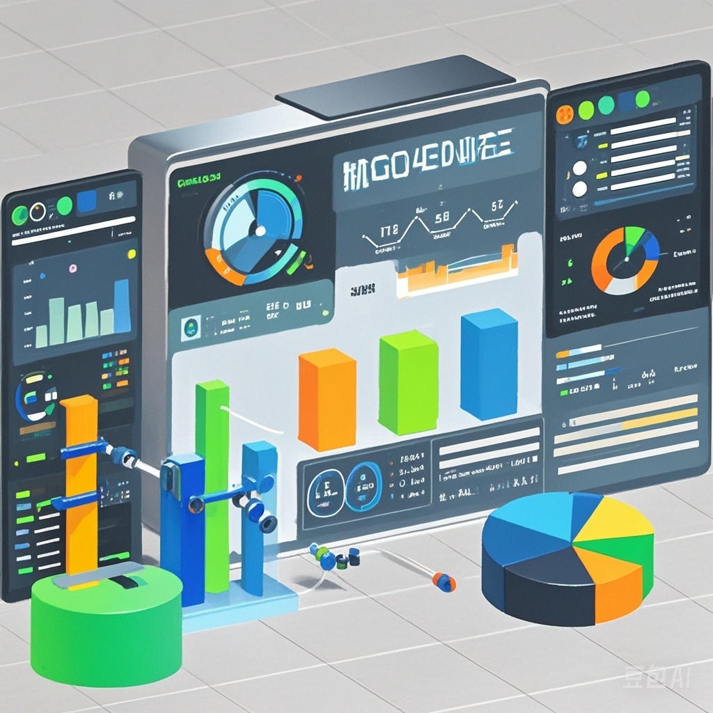

MES（制造执行系统）是一套面向制造企业车间执行层的生产信息化管理系统。
核心功能
-
生产计划与调度：
MES 系统接收上层
ERP（企业资源计划）系统下达的生产计划，将其分解为详细的车间作业计划。它可以根据设备状况、人员技能、物料供应等因素，合理地安排生产任务的时间和顺序，确保生产活动有序进行。例如，在一个机械制造车间，MES
系统能够根据订单需求和设备可用性，安排不同零件在各台机床的加工顺序。
-
生产过程监控：
能够实时采集生产现场的数据，包括设备运行状态、在制品状态、人员工作情况等。通过对这些数据的分析，企业可以及时发现生产过程中的问题，如设备故障、生产进度延迟等。例如，在电子产品组装线上，MES
系统可以通过传感器收集设备的运行数据，一旦设备出现异常，系统会立即发出警报。
-
质量管理：
定义和管理产品质量检验标准，在生产过程中对产品质量进行实时监测和控制。它可以进行质量数据的收集与分析，对不合格品进行追溯，帮助企业提高产品质量。例如，在食品加工企业，MES
系统可以在生产线上设置质量检测点，检测食品的成分、重量、外观等指标，一旦发现不符合标准的产品，就可以追溯其生产环节。
-
物料管理：
物跟踪和管理生产过程中的物料流动，包括原材料的领用、在制品的转移、成品的入库等。它可以根据生产进度和物料需求计划，合理地控制物料库存，确保物料的及时供应，避免积压和短缺。例如，在服装制造企业，MES
系统可以监控布料、辅料等物料的使用情况，根据生产计划及时补货。
系统价值
-
提高生产效率：
通过优化生产计划和调度，减少设备停机时间和生产等待时间，从而提高企业的整体生产效率。同时，它能够实时监控生产过程，及时发现并解决问题，进一步提升生产效率。
-
提升产品质量：
MES
系统通过在生产过程中严格的质量控制和质量追溯机制，帮助企业有效控制产品质量，降低次品率，提升产品的一致性和稳定性。
-
降低成本：
有效的设备管理可以降低设备维修成本，合理的物料管理可以减少库存积压和物料浪费，从而降低企业的生产成本。
-
增强企业竞争力：
MES
系统使企业能够快速响应市场变化，灵活调整生产策略，生产出高质量、符合市场需求的产品，从而增强企业在市场中的竞争力。
